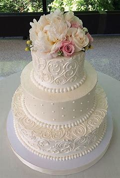

There are many things to consider when choosing a birthday cake. The type of cake flavor, the icing type, and of course the decoration.
The following is a list of the typical types of cake flavors:
The following is a list of the typical icing flavors & types:
The following is a list of the common fillings
Special occasions are those that include milestone birthdays, anniversaries, bridal showers, baby showers, and celebrations of any kind. When considering what special occasion cake to order, it is important to know the type of party as well as the theme of the occasion. All the same considerations for ordering a birthday cake are in order, except special occasion cakes require more attention to the details of the event.
Below are some images of special occasion cakes that were custom designed.
A special cake for your special day. These cakes require more advance notice and are typically more focused on the detail and design matching the theme of the wedding. All of the considerations for ordering a birthday cake are taken into consideration, but with much greater emphasis on the details of the cake decoration.
Below are some pictures of some poplular wedding cake designs:
Floral Harmony
Floral Boutique

Simply Love
Here are a few links to some of my favorite cake places: